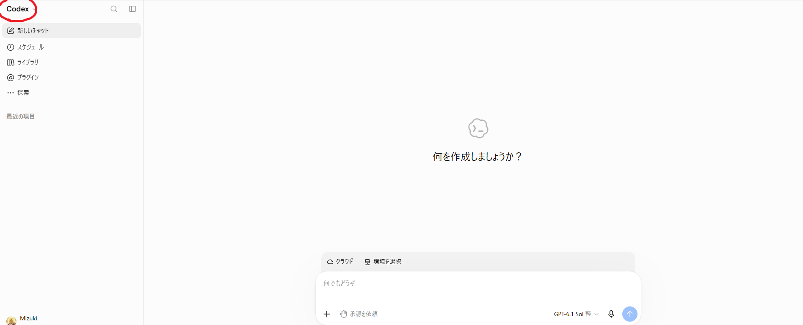

Hands-on 03
この章でやること
この章では、Codexを使って、社内向けの 生成AIセミナー告知ページを作成します。
目的は、HTMLやCSSのコードを受け取ることではありません。 Codexに、必要なファイル作成、ページ構成、デザイン、表示確認、修正までを任せ、 Webページとして完成させることです。
第1章で作成した提案書と、第2章で作成したGoogleフォームを活用し、 「社内向けのセミナー告知ページ」として使える形に仕上げます。
今回のポイント： Codexは、単にコードを出力するだけでなく、 Webページ制作の作業そのものを進めるために使います。 受講者は「何を作りたいか」を伝え、Codexが作ったページを確認しながら修正していきます。
注意： 研修中は、実在する個人情報、顧客情報、社内機密情報を入力しないでください。 会社名や部署名などは、必要に応じて架空の内容に置き換えて演習します。
Connection
前章とのつながり
第1章で作成したもの
- 生成AI研修の必要性に関する調査結果
- 会社向けの生成AI研修実施提案書
- 研修の目的・対象者・内容案・期待効果
第2章で作成したもの
- 生成AI研修 参加申込・活用度診断フォーム
- 希望研修日、氏名、所属部署などを入力できる申込フォーム
- Googleフォームの回答用URL
第3章では、この2つを使って、 社内に向けて生成AIセミナーの開催を案内するWebページを作成します。
この章の考え方： 提案書で整理した内容を、社内向けにわかりやすく伝えるページへ変換します。 さらに、第2章で作成したGoogleフォームを参加申込先として設定します。
Goal
この章のゴール
1. Codexに依頼する
第1章の提案書と第2章のフォームURLをもとに、 社内向け告知ページの制作をCodexに依頼します。
2. Webページを完成させる
Codexが作成したページを確認し、 文章、見た目、ボタン、スマホ表示などを修正します。
3. GitHub Pagesで公開する
作成したWebページをGitHub Pagesで公開し、 ブラウザからURLで見られる状態にします。
Theme
作成するWebページ
今回作成するのは、社内向けの 生成AI活用セミナー開催のお知らせページです。
ページに入れる主な内容
- セミナーのタイトル
- 開催の目的
- 対象者
- 学べる内容
- 参加するメリット
- 開催概要
- 注意事項
- よくある質問
- 参加申込ボタン
実務での使いどころ
社内研修、説明会、勉強会、オンラインセミナー、社内プロジェクトの案内など、 告知ページはさまざまな場面で活用できます。
サンプルページ： 今回作成する社内向けセミナー告知ページの完成イメージとして、 以下のサンプルページを確認できます。 受講者は、自分でページを作成する前に、ページ構成や見せ方を確認しておきましょう。
Preparation
事前準備
Codexに依頼する前に、以下を準備します。
第1章の提案書
第1章で作成した「生成AI研修会 実施提案書」を開きます。 この提案書の内容をもとに、告知ページの文章を作成します。
第2章のGoogleフォームURL
第2章で作成したGoogleフォームの 回答用URLを用意します。 編集用URLではなく、回答者が開くURLを使います。
AIチャット画面
Codexに渡す作業指示を作るために、AIチャット画面を開きます。 ここでは、いきなりCodexに依頼せず、まずプロンプトを作らせます。
Codex作業画面
CodexでWebページ制作を進める画面を開きます。 GitHubとの連携やリポジトリ作成も、Codex側の画面から進めます。
GitHub
Codex側からGitHubと連携する
CodexでWebページ制作を進める場合、GitHubと連携しておくと、 作成したHTML、CSS、JavaScriptなどのファイルを管理しやすくなります。
この研修では、先にGitHubでアカウント登録をするのではなく、 Codex側の画面からGitHub連携へ進む流れで説明します。
今回の流れ： Codex側でGitHub連携を開き、表示されたGitHubの画面でログインまたは登録を行います。 Gmailアドレスを使ってGitHubに入る場合も、この流れの中で進めます。
公開範囲について： 今回はGitHub PagesでWebページを公開するため、研修用リポジトリは 最初からPublicで作成します。 ただし、個人情報、社内機密、顧客情報は絶対に入れないでください。
Codexの画面を開く
まずCodexの作業画面を開きます。 GitHub連携が必要な場合、Codex側にGitHubと接続するための案内が表示されます。
GitHub連携の設定に進む
Codexの画面から、GitHubとの連携設定に進みます。 画面上に「GitHubに接続」「Connect GitHub」などの表示がある場合は、それを選択します。
ここで、GitHubのログイン画面またはアカウント作成画面に移動します。
GmailアドレスでGitHubに入る
GitHubの画面が表示されたら、Gmailアドレスを使ってログインまたはアカウント作成を行います。
すでにGitHubアカウントを持っている場合は、そのアカウントでログインします。 持っていない場合は、表示された手順に沿ってアカウントを作成します。
Codexとの連携を許可する
GitHub側で、CodexまたはChatGPTからの連携許可を求められたら、内容を確認して許可します。
アクセスできるリポジトリを選べる場合は、 研修で使うリポジトリだけを選択します。
研修用リポジトリを作成する
CodexまたはGitHubの画面で、作業対象にする研修用リポジトリを作成します。
ai-seminar-page今回はGitHub Pagesで公開するため、公開範囲は Publicを選択します。
Codexで作業を開始する
GitHub連携とリポジトリ作成が完了したら、CodexにWebページ制作を依頼します。 CodexがHTML、CSS、JavaScriptなどのファイルを作成・編集できる状態になります。
注意： 会社の業務用リポジトリや、機密情報を含むリポジトリは研修で使用しないでください。 この演習では、必ず公開して問題のない研修用リポジトリを使います。
Codex
Codex画面を確認する
Codexでは、作りたいものを自然な言葉で伝えます。 今回は、社内向けの生成AIセミナー告知ページを作成してもらいます。

ポイント： Codexには「コードを書いてください」ではなく、 「Webページとして完成させてください」と依頼します。
Prompt
Codex用プロンプトをAIに作らせる
いきなりCodexに依頼するのではなく、まずAIに Codexへ渡すためのプロンプトを作らせます。
このとき、第1章の提案書全文と、第2章で作成したGoogleフォームの回答用URLを まとめてAIに渡します。 後からURLを追加するのではなく、プロンプトを作る段階で含めるのがポイントです。
この作業でやること： AIに「Codexに渡す作業指示」を作らせます。 この段階では、HTML/CSS/JavaScriptの中身を作らせる必要はありません。
あなたは、AIツールを使ったWebページ制作を支援するアシスタントです。
これから、Codexに依頼して、社内向けの「生成AIセミナー告知ページ」を作成します。
以下に、
1. 第1章で作成した「生成AI研修会 実施提案書」の本文
2. 第2章で作成したGoogleフォームの回答用URL
を貼り付けます。
これらをもとに、Codexに渡すためのプロンプトを作成してください。
目的は、HTML/CSS/JavaScriptのコードだけを出力させることではありません。
Codexに、Webページとして完成させる作業を依頼するためのプロンプトにしてください。
プロンプトには、以下の条件を含めてください。
- 社内向けの生成AIセミナー告知ページを作成すること
- 第1章の提案書をもとに、開催目的、対象者、学べる内容、参加メリットを整理すること
- 第2章のGoogleフォーム回答用URLを、参加申込ボタンのリンク先に設定すること
- HTML、CSS、JavaScriptは別ファイルに分けること
- index.html、assets/css/style.css、assets/js/main.js の構成にすること
- 画像を使う場合は assets/images/ に入れる前提にすること
- PCでもスマートフォンでも見やすいレスポンシブデザインにすること
- 企業向けの落ち着いたデザインにすること
- 青や緑を基調に、信頼感のある見た目にすること
- 申込ボタンを目立たせること
- 実在する個人情報、顧客情報、社内機密情報は入れないこと
- GitHub Pagesで公開しやすいファイル構成にすること
- 最後に、確認すべきポイントも示すこと
この段階では、HTML/CSS/JavaScriptのコードは作成しないでください。
Codexに渡すための作業指示プロンプトだけを作成してください。
【Googleフォーム回答用URL】
ここに第2章で作成したGoogleフォームの回答用URLを貼り付けます。
【第1章の提案書本文】
ここに第1章で作成した提案書の本文を貼り付けます。GoogleフォームのURLは、必ず回答者が入力するためのURLを貼り付けます。 編集用URLを貼ると、申込者がフォームを開けない場合があります。
Create
CodexでWebページを作成する
AIが作成したCodex用プロンプトをコピーし、Codexに貼り付けます。 Codexには、Webページを完成させるところまで依頼します。
AIが作成したプロンプトをコピーする
前の手順でAIが作成した「Codexへ渡す作業指示」をコピーします。
Codexに貼り付ける
Codexの作業画面に貼り付け、Webページ制作を依頼します。
作成されたファイルを確認する
Codexが作成したHTML、CSS、JavaScriptのファイルを確認します。 ファイル構成がわかりにくい場合は、Codexに整理を依頼します。
ページを表示して確認する
画面表示、文章、申込ボタン、スマートフォン表示などを確認します。
気になるところを修正依頼する
文章が長い、ボタンが目立たない、デザインが派手すぎるなど、 気になる点を自然な言葉でCodexに伝えて修正します。
作成されたページを確認しました。
以下の点を修正してください。
- 申込ボタンをもっと目立たせてください
- 全体を企業向けの落ち着いたデザインにしてください
- スマートフォンで見たときに余白が広すぎないようにしてください
- セミナーの対象者と参加メリットを、箇条書きでわかりやすくしてください
- Googleフォームへのリンクが正しく設定されているか確認してくださいPublish
GitHub Pagesで公開する
CodexでWebページが完成したら、GitHub Pagesを使って公開します。 公開すると、ブラウザからURLでページを開けるようになります。
今回は最初からPublicリポジトリで作成しているため、 GitHub Pagesの公開設定を行えば、Webページとして見られる状態にできます。
GitHubでリポジトリを開く
Codexで作成した研修用リポジトリをGitHubで開きます。
例として、リポジトリ名は ai-seminar-page です。
ファイル構成を確認する
リポジトリの直下に index.html があることを確認します。
CSSやJavaScriptは、以下のような構成になっていれば問題ありません。
ai-seminar-page/
index.html
assets/
css/
style.css
js/
main.js
images/
seminar-main.pngSettingsを開く
GitHubのリポジトリ画面上部にある Settings を開きます。
Pagesを開く
Settings画面の左側メニューから Pages を選択します。
Build and deploymentを設定する
Build and deployment の項目で、 Sourceを Deploy from a branch にします。
Branchは main、 フォルダは /root を選択します。 その後、Save を押します。
公開URLを確認する
設定後、少し待つとGitHub Pagesの公開URLが表示されます。 URLは以下のような形式になります。
https://ユーザー名.github.io/ai-seminar-page/公開直後は反映に数分かかることがあります。 すぐに404が表示されても、少し待ってから再読み込みしてください。
公開前に必ず確認
PublicリポジトリとGitHub Pagesで公開すると、ページやファイルは外部から見られる状態になります。 公開前に、以下の情報が含まれていないか確認してください。
- 個人情報
- 顧客情報
- 社員のメールアドレス
- 社内資料
- APIキーやパスワード
- 社外秘の文章や画像
今回の演習では、架空の会社名、架空の研修内容、公開して問題のない文章や画像だけを使います。 実際の業務で使う場合は、会社のルールを確認してから公開してください。
Review
表示確認と修正
GitHub Pagesで公開できたら、実際のURLを開いて確認します。 自分のPCだけでなく、スマートフォンでも表示を確認すると安心です。
表示確認
- ページのタイトルがわかりやすい
- 開催目的が伝わる
- 対象者が明確になっている
- 学べる内容が整理されている
- 参加申込ボタンが目立つ
リンク確認
- 申込ボタンからGoogleフォームが開く
- Googleフォームが回答用URLになっている
- スマートフォンでもボタンを押しやすい
- 不要なリンクや空のリンクがない
参加申込ボタンのリンク先を、以下のGoogleフォーム回答用URLに修正してください。
【Googleフォーム回答用URL】
ここに正しいGoogleフォームの回答用URLを貼り付けます。
編集用URLではなく、回答者が入力するためのURLを使ってください。
申込ボタンをクリックしたときに、新しいタブでフォームが開くようにしてください。Files
完成ファイルの確認
Webページとして完成させるためには、HTMLだけでなく、 CSSやJavaScriptなどの関連ファイルも正しく配置されている必要があります。
確認するファイル
index.htmlassets/css/style.cssassets/js/main.jsassets/images/内の画像ファイル
確認すること
- 画像が表示されている
- CSSが反映されている
- JavaScriptが動いている
- リンク切れがない
- GitHub Pagesで公開できている
Codexが作成したファイル構成が複雑になっている場合は、 「GitHub Pagesで公開しやすいように、index.htmlをリポジトリ直下に置き、 CSSとJavaScriptはassetsフォルダに整理してください」と依頼します。
Checklist
作業チェックリスト
Check Points
確認ポイント
Webページとしての確認
- ページを開いたときに、何の案内かすぐわかる
- セミナーの目的が明確に書かれている
- 対象者がわかりやすい
- 学べる内容が整理されている
- 申込ボタンが目立つ
業務利用としての確認
- 社内に公開しても問題ない表現になっている
- 実在する個人情報や機密情報が入っていない
- Googleフォームのリンクが正しい
- スマートフォンでも読みやすい
- 案内文として違和感がない
この章で学ぶこと： AIにWebページ制作を任せる場合でも、 最終的に公開してよいかを確認するのは人間の役割です。 文章、リンク、見た目、情報の正確性を必ず確認します。
Troubleshooting
困ったときは
CodexでGitHub連携の画面が出てきません
アカウントや利用環境によって、表示される画面が異なる場合があります。 Codex上でGitHub連携が不要な形で作業できる場合は、そのまま作成されたファイルを確認してください。
GitHubのログインや登録がうまくいきません
入力したメールアドレスやパスワードに誤りがないか確認してください。 Gmailアドレスで登録する場合、確認メールが届くことがあります。 メールボックスを確認し、GitHubからの案内に従って進めます。
会社のGitHubを使ってよいかわかりません
会社の業務用GitHubを使う場合は、必ず社内ルールを確認してください。 研修では、個人情報や機密情報を含まない研修用リポジトリを使うのが安全です。
リポジトリをPrivateで作ってしまいました
GitHub Pagesで公開する場合は、リポジトリをPublicに変更します。 GitHubで対象リポジトリを開き、 Settings の下部にある Danger Zone から Change repository visibility を選択し、 Change to public に変更します。
変更前に、個人情報、顧客情報、社内機密、APIキー、パスワードなどが含まれていないか確認してください。
GitHub Pagesの設定画面が見つかりません
対象リポジトリを開き、上部メニューの Settings を選択します。 Settings画面の左側メニューにある Pages を開きます。
GitHub Pagesで公開したのにページが見られません
公開直後は反映に数分かかることがあります。 少し待ってから再読み込みしてください。
また、index.html がリポジトリ直下にあるか、
Pagesの設定でBranchが main、フォルダが /root になっているか確認してください。
CodexでGitHubリポジトリが選べません
GitHub連携が完了していない、またはCodexに対象リポジトリへのアクセス権限が付与されていない可能性があります。 GitHub連携画面で、研修用リポジトリが選択されているか確認してください。
Codexが思ったようなページを作ってくれません
追加で修正依頼を出します。 「もっと企業向けに」「申込ボタンを目立たせて」「スマホで読みやすく」など、 気になる点を自然な言葉で伝えてください。
申込ボタンからGoogleフォームが開きません
GoogleフォームのURLが間違っている可能性があります。 第2章で作成したフォームの回答用URLをコピーし直し、 Codexにリンク先を修正するよう依頼してください。
Googleフォームの編集画面が開いてしまいます
編集用URLを貼っている可能性があります。 回答者が入力するためのURLを取得し直し、参加申込ボタンのリンク先に設定してください。
スマートフォンで表示が崩れます
Codexに「スマートフォン表示で余白や文字サイズを調整してください」と依頼します。 特に、横幅の広い表やボタン、画像が原因になることがあります。
デザインが派手すぎます
「企業向け研修の案内ページとして、落ち着いた配色にしてください」 「青や緑を基調に、信頼感のあるデザインにしてください」 と依頼すると調整しやすくなります。
ページの文章が長すぎます
「社内向けに読みやすいように、文章を短くしてください」 「箇条書きやカード形式を使って整理してください」 と依頼してください。